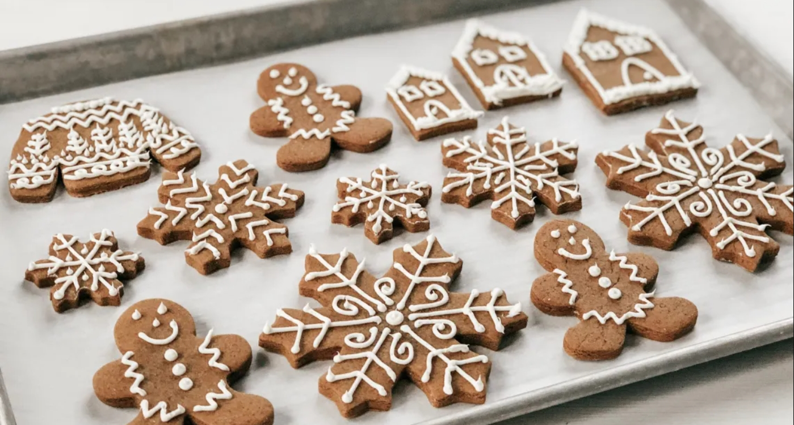

приготовление:
-
Цель — кайфануть, независимо ни от чего. Для этого понадобятся чистая кухня, свободное время, расслабленное настроение и лёгкий джаз. Заранее достать 100 г сливочного масла из холодильника и дать ему размягчиться.
-
Смешать в миске 200 г муки, ½ ч. л. соды, щепотку соли, 1½ ч. л. корицы, ½ ч. л. мускатного ореха и немного гвоздики и кардамона. Набор специй и пропорции можно менять по вкусу.
-
В отдельной миске взбить миксером мягкое сливочное масло со 100 г сахара и 1 яйцом. Добавить цедру 2 апельсинов или сушёную цедру и 2 ч. л. имбиря. Всыпать мучную смесь и перемешать миксером. Тесто получится липким — это нормально. Завернуть его в пищевую плёнку и убрать в холодильник на 1–2 часа.
-
Разогреть духовку до 180 °C. Присыпать рабочую поверхность и тесто мукой, накрыть тесто листом пергамента и раскатать в пласт толщиной 2–4 мм. Снять пергамент, вырезать фигурки формочками и переложить на противень. Выпекать 7–10 минут: меньше для мягкого печенья, дольше для более хрустящего.
-
До следующей партии держать остатки теста в холодильнике: в тепле оно становится более липким.
-
По желанию украсить остывшее печенье глазурью. Смешать 1 яичный белок, 150 г сахарной пудры и ½ ч. л. лимонного сока. Взбивать миксером ≈ 3 минуты. Нанести глазурь кондитерским мешком с отверстием 1–1,5 мм или кондитерским шприцем.